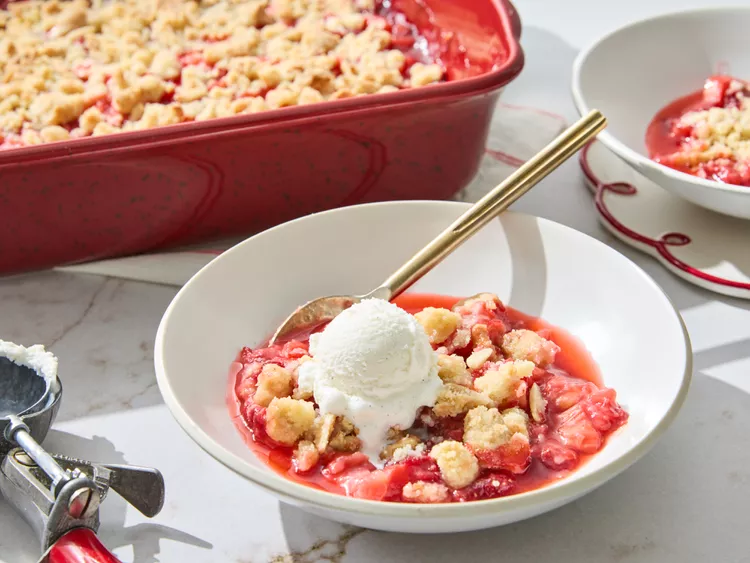

Strawberry Rhubard Cruble
Description
This strawberry rhubarb crumble has a superb balance of sweet and tart and a crumble that delivers both a hint of lemon zest and the rich flavor of almonds.
Served warm or at room temperature, with vanilla ice cream or whipped cream, it's the ultimate spring dessert.
Ingredients
- 1 1/4 cups all-purpose flour
- 1 cup slivered almonds
- 1 3/4 cups white sugar, divided
- 1/2 cup butter, melted
- 2 teaspoons lemon zest
- 1/2 teaspoon salt, divided
- 6 cups fresh strawberries, hulled and quartered
- 4 cups fresh rhubarb, cut into 1/2-inch slices, or frozen unsweetened sliced rhubarb
- 1/4 cup cornstarch
- sweetened whipped cream or vanilla ice cream (optional)
Steps
- Gather all ingredients. Preheat the oven to 375 degrees F (190 degrees C).
- For topping, stir together flour, almonds, 3/4 cup sugar, melted butter, lemon zest, and 1/4 teaspoon salt in a medium bowl until clumps form. Cover and chill topping while preparing filling.
- For filling, combine strawberries and rhubarb in a very large bowl. In a small bowl stir together remaining 1 cup sugar, cornstarch, and salt; add to fruit and toss well to combine.
- Transfer filling to a 3-quart rectangular baking dish. If using frozen fruit, let fruit mixture stand for 45 minutes at room temperature.
- Cover filling with topping.
- Bake in the preheated oven until fruit is bubbly in the center and topping is golden, about 1 hour (1 1/2 hours if using frozen fruit). If topping is browning too quickly, cover with foil during the last 30 minutes of baking time.
- Let stand for 30 minutes before serving. Serve warm or at room temperature. If desired, serve with whipped cream or ice cream.